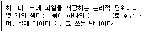
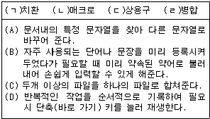
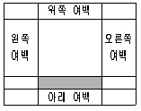
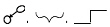
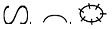
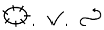

워드프로세서-(구-1급) (2003-11-16 기출문제)
1과목: 워드프로세싱 일반
1. 다음 설명에서 ( ) 안에 들어갈 단어로 적당한 것은?

- 트랙(Track)
- FAT(File Allocation Table)
- 실린더(Cylinder)
- 클러스터(Cluster)
(정답률: 57%)

2. 다음 중 컬러 잉크젯 프린터나 인쇄소에서 주로 사용하는 잉크로 옳은 것은?
- Red, Green, Blue
- Red, Green, Yellow, Black
- Cyan, Magenta, Blue
- Cyan, Magenta, Yellow, Black
(정답률: 80%)
3. 다음 중 워드프로세서의 표시기능에 대한 설명으로 옳지 않은 것은?
- 포인트는 문자의 크기 단위로 1포인트는 보통 0.351mm이다.
- 장평이란 문자의 가로 크기에 대한 세로 크기의 비율을 말한다.
- 줄(행) 간격이란 윗줄과 아래 줄의 간격으로 단위는 줄에서 크기가 가장 큰 글자를 기준으로 간격을 조정하는 비례 줄 간격 방식을 디폴트로 제공한다.
- 자간이란 문자와 문자 사이의 간격을 의미한다.
(정답률: 83%)
4. 다음 중 첨자 문자에 대한 설명으로 옳은 것은?
- 문자의 가로와 세로의 비율이 1 : 1인 문자
- 전각 문자를 가로로 2배 확대한 문자
- 상공회의소 문제 오류로 보기 삭제
- 전각 문자를 세로로 2배 확대한 문자
(정답률: 51%)
5. 다음 보기의 여러 기능과 그에 대한 설명이 올바르게 연결된 것은?

- (ㄱ) - (B)
- (ㄴ) - (D)
- (ㄷ) - (C)
- (ㄹ) - (A)
(정답률: 93%)
6. 다음 중 화면상에 픽셀의 색상을 트루컬러(True Color)로 표현하고자 할 때 필요한 비트의 수로 옳은 것은?
- 1
- 8
- 16
- 24
(정답률: 85%)
7. 다음의 그림에서 음영 처리된 영역의 명칭으로 옳은 것은?

- 제본
- 꼬리말
- 머리말
- 미주
(정답률: 87%)
8. 다음 중 '상공주식회사'라는 단어를 반복적으로 입력하고자 할 때 사용할 수 있는 기능이 아닌 것은?
- 복사하여 붙이기
- 상용구
- 스타일(Style)
- 매크로(Macro)
(정답률: 77%)
9. 다음 중 마우스로 영역(블록)을 지정하는 방법으로 옳지 않은 것은?
- 한 단어 영역 지정 : 해당 단어 앞에서 마우스 포인터를 놓고 세 번 클릭한다.
- 한 줄 영역 지정 : 해당 줄의 왼쪽 끝으로 마우스 포인터를 이동하여 포인터가 화살표로 바뀌면 클릭한다.
- 문단 전체 영역 지정 : 해당 문단의 왼쪽 끝으로 마우스 포인터를 이동하여 포인터가 화살표로 바뀌면 두 번 클릭한다.
- 문서 전체 영역 지정 : 문단의 왼쪽 끝으로 마우스 포인터를 이동하여 포인터가 화살표로 바뀌면 세 번 클릭한다.
(정답률: 83%)
10. 다음 중에서 매크로를 사용하였을 때 가장 비효율적인 것은?
- 각 문단의 첫 글자만 크게 확대하려 할 때
- 데이터베이스 파일에 있는 내용을 이용하여 초대장을 인쇄하려 할 때
- 문서에 여러 개의 표가 있을 때 각 표의 첫 번째 줄에 음영을 넣으려 할 때
- 문서에 같은 단어가 여러 번 나오는데 그 단어 모두에 밑줄을 그으려 할 때
(정답률: 61%)
11. 다음 중에서 용어에 대한 설명이 옳지 않은 것은?
- 하드 카피(Hard Copy) : 화면에 보이는 내용을 프린터에 인쇄하는 것을 의미한다.
- 소프트 카피(Soft Copy) : 문서의 내용을 화면에 출력하거나 디스크에 저장하는 것을 말한다.
- 피치(Pitch) : 인쇄할 때 문자와 문자 사이의 간격을 나타내는 단위로 1인치에 인쇄되는 문자 수를 말한다.
- 레이아웃(Layout) : 화면의 어느 위치에서든지 편집이 가능한 편집기를 말한다.
(정답률: 74%)
12. 다음 중 문서의 발송에 대하여 설명한 것으로 옳지 않은 것은?
- 문서는 처리과에서 발송하되 우편을 이용하여 발신함을 원칙으로 한다.
- 인편 또는 우편으로 발송하는 문서는 문서과의 지원을 받아 발송할 수 있다.
- 전자문서의 경우에는 별도의 시행문을 작성하지 아니하고 결재한 문서를 시행문으로 변환하여 시행한다.
- 행정기관의 장은 공문서를 수발함에 있어 문서의 보안유지와 분실, 훼손 및 도난방지를 위한 조치를 강구하여야 한다.
(정답률: 71%)
13. 다음 중 엑셀로 작성한 워크시트 파일을 워드문서에 삽입하려면, 다음 중 어떤 기능을 사용해야 하는가?
- 메일 머지
- 문서 마당
- OLE개체 삽입
- 프리젠테이션
(정답률: 89%)
14. 다음 중 문서의 보존기간에 포함되기 시작하는 날은?
- 문서 완결한 날의 다음해 1월 1일
- 문서 기안한 해의 1월 1일
- 문서 시행일
- 문서 기안일
(정답률: 80%)
15. 결재권자가 휴가, 출장 기타의 사유로 결재할 수 없는 때에는 그 직무를 대리하는 자가 대결할 수 있되, 그 내용이 중요한 문서에 대하여는 결재권자에게 후에 어떻게 조처하여야 하는가?
- 사후에 보고한다.
- 사후에 반드시 결재를 받는다.
- 정규결재과정을 다시 거친다.
- 내부결재과정을 거친 후 시행한다.
(정답률: 83%)
16. 다음 중 문서의 분량이 증가할 가능성이 있는 교정부호들로만 나열된 것은?



(정답률: 91%)
17. 다음 중 교정부호 사용 시 유의할 점에 대한 설명으로 옳지 않은 것은?
- 교정부호를 표시하는 색은 눈에 잘 띄게 한다.
- 교정부호는 지정한 부호를 사용해서 교정한다.
- 한 번 교정된 부분은 다시 교정할 수 없다.
- 교정부호가 너무 복잡하거나 난해하지 않도록 한다.
(정답률: 93%)
18. 다음 중 모핑(Morphing)에 대한 설명으로 옳은 것은?
- 3차원 그래픽에서 음영과 채색을 적절히 조절하여 실제감을 극대화하는 작업이다.
- 2개의 이미지를 적절히 연결시켜 변환, 통합하는 기법이다.
- 색의 농도나 색조를 바꾸는 이미지 변형 작업이다.
- 글자와 글자 사이를 적절한 간격으로 띄워주는 작업이다.
(정답률: 69%)
19. 다음 중 전자출판(Electronic Publishing)의 용어에 대하여 설명한 것으로 옳지 않은 것은?
- 디더링(Dithering) : 제한된 색상을 조합 또는 비율을 변화하여 새로운 색을 만드는 작업
- 리딩(Leading) : 자간의 미세 조정으로 특정 문자들의 간격을 조정
- 스프레드(Spread) : 대상체의 컬러가 배경색의 컬러보다 옅어서 대상체가 보이지 않는 현상
- 리터칭(Retouching) : 기존의 이미지를 다른 형태로 새롭게 변형시키는 작업
(정답률: 80%)
20. 다음 중 유니코드(KS X 10⑤-1)에 대한 설명으로 옳은 것은?
- 영문과 공백은 1바이트, 한글과 한자는 2바이트로 처리한다.
- ‘必勝 KOREA’라는 말을 입력할 경우 최소 16바이트의 기억 공간이 필요하다.
- 정보 교환 시 제어 문자와 충돌이 발생할 가능성이 크다.
- 조합형 한글 코드에 비해 적은 기억 공간을 사용한다.
(정답률: 88%)
2과목: PC 운영 체제
21. 다음 중 한글 Windows 98에서 CD-ROM의 자동 실행과 관련 있는 파일은?
- Autoexec.bat
- Autorun.bat
- Autorun.inf
- Autoexec.inf
(정답률: 55%)
22. 한글 Windows 98에서 윈도 호환 키보드를 사용하는 경우에 윈도 로고 키와 추가키를 함께 사용하였을 때 나타나는 현상으로 옳지 않은 것은?
- [윈도 로고키] + [D] : 열려 있는 모든 창을 최소화한다.
- [윈도 로고키] + [R] : 실행 대화상자를 연다.
- [윈도 로고키] + [F] : 컴퓨터 찾기를 연다.
- [윈도 로고키] + [Break] : 시스템 등록정보 대화상자를 연다.
(정답률: 63%)
23. 한글 Windows 98에서 하드디스크를 효율적으로 사용하기 위하여, [디스크 정리] 프로그램을 이용하려고 할 때 제거할 수 있는 대상 파일로 옳지 않은 것은?
- 임시 인터넷 파일
- 다운로드한 프로그램 파일
- 확장명이 DAT나 TXT인 일반파일
- 휴지통
(정답률: 53%)
24. 한글 Windows 98에서 바탕화면의 오른쪽 부분에 액티브 데스크탑을 적용한 인터넷 채널을 표시할 수 있는데, 컴퓨터가 부팅될 때 이 부분의 표시 유무를 설정할 수 있는 프로그램은?
- [제어판] - [인터넷]
- [제어판] - [네트워크 연결]
- [제어판] - [디스플레이]
- [제어판] - [바탕화면 테마]
(정답률: 56%)
25. 한글 Windows 98의 바탕화면에서 사용하는 바로 가기 아이콘에 대한 설명으로 옳은 것은?
- 파일, 폴더, 프린터 등의 바로 가기 메뉴에서 [보내기] - [바탕 화면에 바로 가기 만들기]를 클릭하면 바로 가기 아이콘을 만들 수 있다.
- 바로 가기 아이콘을 만들 파일, 폴더, 프린터 등의 항목 위에서 마우스의 오른쪽 버튼을 더블 클릭하면 바로 가기 아이콘이 만들어진다.
- 바탕 화면에 있는 바로 가기 아이콘 위에서 마우스의 오른쪽 버튼을 더블 클릭하면 바로 가기 아이콘이 삭제된다.
- 실행 프로그램에 대한 바로 가기 아이콘을 삭제하려면 반드시 [프로그램 추가/제거]를 사용해야만 한다.
(정답률: 60%)
26. 다음 중 한글 Windows 98에서 사용하는 [탐색기]에 대한 설명으로 옳지 않은 것은?
- Windows 탐색기에서 인터넷 주소를 입력하여 바로 Web Browser로 연결해서 쓸 수 있다.
- 폴더 창에서 ‘-’ 표시가 된 특정 폴더를 선택한 후 오른쪽 키 패드의 ‘*’ 키를 누르면 포함된 모든 하위 폴더가 표시된다.
- 탐색기에서는 [보기] 메뉴에 있는 [폴더 옵션]의 설정에 따라서 숨긴 파일과 시스템 파일을 볼 수 있다.
- 탐색기에서 상태 표시줄을 보이지 않게 하려면 [보기] - [폴더 옵션]에서 설정한다.
(정답률: 32%)
27. 한글 Windows 98에서 새 하드웨어를 설치한 후에 [시스템 등록정보] 창에서 장치 관리자 탭을 열어보니 장치 앞에 느낌표()가 있다. 이 표시가 나타날 수 있는 이유로 옳지 않은 것은?
- 해당 장치를 위한 드라이버를 로드할 수 없기 때문이다.
- 다른 장치와 IRQ 충돌이 일어났기 때문이다.
- 해당 장치의 리소스 설정이 자동이 아닌 수동으로 되어 있기 때문이다.
- 잘못된 장치 드라이버가 설치되었기 때문이다.
(정답률: 74%)
28. 한글 Windows 98에서 IP 주소가 210.211.202.1인 컴퓨터에서 공유 이름이 '시험'인 폴더를 지정하는 방법으로 가장 적절한 것은?
- 210.211.202.1W시험
- 210.211.202.1.시험
- WW210.211.202.1W시험
- WW210.211.202.1.시험
(정답률: 74%)
29. 다음 중 한글 Windows 98의 [제어판]에 있는 [시스템]의 등록정보 창에 관한 설명으로 옳지 않은 것은?
- 일반 탭 : 윈도시스템의 버전, 사용자 정보 그리고 CPU의 종류와 RAM 용량을 보여준다.
- 장치 관리자 탭 : 하드웨어 장치 목록을 종류별 또는 연결 상태 순으로 표시해 준다.
- 하드웨어 초기화 파일 탭 : 컴퓨터에 설치된 하드웨어 초기화 파일의 목록을 표시한다.
- 성능 탭 : 시스템 리소스, 파일 시스템 등의 성능 상태 정보를 보여주며 시스템이 최적의 성능을 수행할 수 있도록 디스크 정리를 실행할 수 있다.
(정답률: 48%)
30. 한글 Windows 98에서 바탕화면에 아이콘들이 많아져서 아이콘과 아이콘 사이의 간격을 줄이려고 할 때 사용하는 방법으로 올바르게 설명한 것은?
- [제어판] - [디스플레이] - [화면배색]에서 항목 란의 아이콘 간격 수직과 수평의 간격을 선택한 후에 크기 값을 줄인다.
- [제어판] - [시스템] - [장치관리자] - [모니터]의 단축메뉴에서 아이콘 간격을 선택한 후에 크기 값을 줄인다.
- [제어판] - [디스플레이] - [설정] - [고급]에서 아이콘 항목 옆의 숫자 값을 줄인 후 적용을 선택한다.
- [제어판] - [바탕화면 테마] - [포인터 사운드] 등을 선택한 후 화면 탭에서 내 컴퓨터 아이콘을 선택하여 숫자 값을 줄인다.
(정답률: 50%)
31. 다음 중 한글 Windows 98의 주요 폴더에 대한 설명으로 옳지 않은 것은?
- C:\Windows : 한글 윈도즈가 설치되어 있는 폴더
- C:\Windows\System : 한글 윈도즈의 시스템 관련 파일들이 있는 폴더
- C:\Program Files : 응용 프로그램이 설치되는 폴더
- C:\Windows\SendTo : 외부로 발신한 메일이 저장되는 폴더
(정답률: 63%)
32. 한글 Windows 98의 탐색기 또는 폴더 창의 [보기] 메뉴에서 [폴더 옵션]을 선택하면 폴더 옵션 대화상자가 나타난다. 이 때 '일반' 탭에서 Windows 바탕화면 업데이트에 포함된 세 가지 옵션이 아닌 것은?
- 표준 스타일
- 웹 스타일
- Windows 기본 스타일
- 사용자 정의
(정답률: 36%)
33. 한글 Windows 98에서 파일 또는 폴더를 찾기 위한 [찾기] 대화상자의 [고급] 탭에서 찾기 조건으로 설정할 수 있는 것은?
- 찾기 시작할 위치, 파일 형식
- 찾기 시작할 위치, 파일 크기
- 날짜, 파일 크기
- 파일 형식, 파일 크기
(정답률: 47%)
34. 한글 Windows 98에서 인쇄 작업을 효율적으로 하기 위해 프린터의 스풀을 설정하는 방법에 대하여 설명한 것으로 옳은 것은?
- [시작 메뉴] - [설정] - [프린터] - [등록정보] - [자세히] 탭을 선택한 후 스풀을 설정
- [내 컴퓨터] - [제어판] - [시스템] - [장치관리자] - [프린터]를 클릭한 후 스풀을 설정
- [시작 메뉴] - [설정] - [프린터] - [등록정보] - [일반] 탭을 선택한 후 스풀을 설정
- [내 컴퓨터] - [제어판] - [내게 필요한 옵션] - [일반] 탭을 선택한 후 스풀을 설정
(정답률: 36%)
35. 상공회의소의 문제 오류로 모두 정답 처리 되었습니다. 1번을 입력하여 정답으로 인식시킨후 다음 문제를 풀어 주세요
- 정답
- 오답
- 오답
- 오답
(정답률: 93%)
36. 한글 Windows 98에서 보조프로그램의 [메모장]에 대한 설명으로 옳지 않은 것은?
- 서식이 필요없는 텍스트 문서를 작성할 때 사용한다.
- 크기가 64 KB 이하인 텍스트 파일을 작성할 때 사용되는 보조프로그램이다.
- 문제 오류로 보기 삭제됨
- 한 줄의 입력내용이 길어 한 화면에 표시되지 않을 때 [편집] 메뉴의 [자동 줄 바꿈]을 선택하면 창의 크기에 맞게 자동 개행이 되어 표시된다.
(정답률: 48%)
37. 다음 중 한글 Windows 98의 드라이브 변환기에 대한 설명으로 옳지 않은 것은?
- [시작] - [프로그램] - [보조프로그램] - [시스템 도구] - [드라이브 변환기]로 실행한다.
- 드라이브 변환기를 이용하여 FAT16 형식을 FAT32 형식으로 변경할 수 있다.
- 드라이브 변환기를 이용하여 FAT32 형식을 FAT16 형식으로 변경할 수 있다.
- 디스크 공간 늘림과 같은 디스크 압축 소프트웨어로 압축한 드라이브는 FAT32 형식으로 변경할 수 없다.
(정답률: 48%)
38. 한글 Windows 98의 보조프로그램인 [그림판]에서 그림의 크기를 나타내는 규격 단위로 쓰이지 않는 것은?
- 센티미터(Cm)
- 인치(inch)
- 트윕(Twip)
- 픽셀(Pixel)
(정답률: 61%)
39. 다음 중 한글 Windows 98에서 인터넷 사용에 관한 설명으로 옳지 않은 것은?
- Ping.exe 프로그램은 원격 컴퓨터가 인터넷에 연결되었는지를 알아볼 때 사용한다.
- Winipcfg.exe 프로그램은 현재 컴퓨터의 IP 정보 등을 보여준다.
- TCP/IP 등록정보 창에서 호스트 이름과 도메인 이름을 설정할 수 있다.
- DHCP를 이용할 때는 TCP/IP 등록정보에서 해당 컴퓨터의 IP주소를 할당된 IP 주소로 직접 입력하여야 한다.
(정답률: 52%)
40. 한글 Windows 98에서 공유에 대한 설명으로 옳지 않은 것은?
- 프린터가 없는 컴퓨터에서 프린터를 공유하여 사용하려면 [프린터 추가 마법사] 대화상자에서 ‘네트워크 프린터’를 선택한다.
- 다른 컴퓨터와 파일이나 폴더를 교환하거나 자신의 컴퓨터에 연결된 것처럼 프린터를 사용하려면 네트워크 상에서 폴더나 프린터에 대한 공유가 허용되어 있어야 한다.
- 다른 사람이 공유 여부를 모르게 하기 위해서는 공유 이름을 설정할 때 공유 이름 뒤에 ‘*’를 붙인다.
- 폴더나 드라이브를 공유할 때 필요에 따라 사용 권한을 제한하나 암호를 부여할 수 있다.
(정답률: 67%)
3과목: 컴퓨터 및 정보활용
41. 컴퓨터를 이용하여 업무를 효율적으로 처리하고자 할 경우에는 논리적이고 체계적인 프로그램을 작성하는 것이 중요하다. 일반적인 프로그래밍 순서로 올바른 것은?
- 업무분석 → 입출력 설계 및 흐름도 작성 → 문서화 → 코딩 → 테스트 → 실행
- 업무분석 → 입출력 설계 및 흐름도 작성 → 코딩 → 테스트 → 실행 → 문서화
- 업무분석 → 테스트 → 문서화 → 입출력 설계 및 흐름도 작성 → 코딩 → 실행
- 업무분석 → 입출력 설계 및 흐름도 작성 → 코딩 → 실행 → 문서화 → 테스트
(정답률: 70%)
42. 다음 중 4세대(1970-1985) 컴퓨터의 특징이 아닌 것은?
- PC가 등장했다.
- LSI 기억소자가 등장했다.
- 가상기억장치가 등장했다.
- 온라인 실시간 처리 시스템이 등장했다.
(정답률: 56%)
43. 다음 중 전원이 공급되지 않아도 내용이 지워지지 않아서 디지털카메라의 보조저장장치로 사용되는 기억장치는 어느 것인가?
- DRAM
- SRAM
- Flash Memory
- ROM
(정답률: 74%)
44. 다음 중에서 가장 속도가 빠른 저장 장치는?
- Cache
- Register
- Main Memory
- Magnetic Disk
(정답률: 74%)
45. 하나의 프로세스가 시스템 내에서 실행되는 동안 여러 가지 상태의 변화 과정을 거치게 되는데, 프로세스가 CPU를 차지하고 있다가 입출력 처리를 위하여 CPU를 양보하고 다른 프로세스의 입출력 처리가 종료될 때까지 대기하는 상태를 무엇이라고 하는가?
- Ready State
- Run State
- Wait State
- Deadlock State
(정답률: 67%)
46. 다음 중 데이터베이스 처리의 장점으로 가장 거리가 먼 것은?
- 자료들을 서로 공유할 수 있다.
- 데이터의 중복을 감소시킬 수 있다.
- 데이터의 독립성을 유지할 수 있다.
- 데이터베이스의 무결성을 감소시킬 수 있다.
(정답률: 56%)
47. 운영체제를 수행 기능에 따라 분류하면 제어 프로그램과 처리 프로그램으로 구분할 수 있다. 다음 중 제어 프로그램이 제공하는 기능이 아닌 것은?
- 시스템 전체의 동작 상태 감독
- 데이터베이스의 검색
- 프로그램 실행의 스케줄링
- 기억 장치의 관리
(정답률: 55%)
48. 메모리가 정상적으로 인식되지 않을 때의 원인으로 옳지 않은 것은?
- 램의 속도를 CMOS 설정에서 임의로 변경한 경우
- 메인보드의 램 소켓에 램을 순서대로 꽂지 않은 경우
- 서로 다른 램의 혼용
- 부트섹터의 손상
(정답률: 60%)
49. 다음 중 효율적인 디스크 관리 방법으로 옳지 않은 것은?
- 디스크 검사로 손상된 영역을 수정한다.
- 디스크 조각 모음을 하여 디스크를 최적화시킨다.
- 디스크 오류 검사를 통해 오류발견 위치를 FAT에 기록하고 사용할 수 없도록 한다.
- 디스크 공간 늘림으로 디스크 오류 발생률을 줄인다.
(정답률: 56%)
50. 서로 다른 프로토콜로 운영되는 네트워크에서 최적의 경로를 결정하는 네트워크 장비는 무엇인가?
- 리피터
- 모뎀
- 라우터
- 더미 허브
(정답률: 77%)
51. 다음 중 아날로그 영상을 디지털 영상으로 전송하고, 수신 후 아날로그 영상으로 복원하는 과정을 올바르게 표시한 것은 무엇인가?
- 아날로그 영상 → 부호화 → 디지털 영상 → 부호화 → 아날로그 영상
- 아날로그 영상 → 부호화 → 디지털 영상 → 복호화 → 아날로그 영상
- 아날로그 영상 → 복호화 → 디지털 영상 → 부호화 → 디지털 영상
- 아날로그 영상 → 복호화 → 아날로그 영상 → 복호화 → 디지털 영상
(정답률: 84%)
52. 다음 중 광 디스크(Optical Disk)의 종류와 설명이 옳지 않은 것은?
- CD-ROM : 기록된 내용을 수정할 수 없다.
- DVD : 디스크 한 면에 약 4.7GB 정도의 데이터 저장이 가능하지만 DVD 장치로는 기존 CD-ROM의 판독이 불가능하다.
- CD-R : CD-Writer를 사용하여 한 번에 한해서 데이터를 기록할 수 있다.
- CD-RW : 약 1,000회까지 기록할 수 있다.
(정답률: 66%)
53. 비디오 CD나 CD-I에서와 같이 CD 매체에 VHS 테이프 수준의 동영상과 음향을 최대 1.5Mbps로 압축 저장할 수 있는 기술은?
- MPEG1
- JPEG-I
- MPEG2
- JPEG-II
(정답률: 50%)
54. 다음의 설명 중에서 옳지 않은 것은?
- 하이퍼미디어 : 미디어와 미디어를 연결하여 관련된 정보를 쉽게 찾아볼 수 있도록 한 방식
- VRML : 2차원 그래픽을 구현하기 위한 인터넷 표준 언어
- CD-ROM 타이틀 : CD-ROM에 기록된 대용량의 소프트웨어
- VOD(주문형 비디오) : 시청자의 요구에 따라 비디오 프로그램을 즉각 전송해 주는 서비스
(정답률: 72%)
55. 다음 중 이미지 파일 형식에 대한 설명으로 옳지 않은 것은?
- GIF 형식은 256개 색상 중 하나를 투명색으로 지정하여 투명 효과를 줄 수 있다.
- JPG 형식은 최대 1,600만 색을 표현할 수 있다.
- 사진이나 미묘한 변화가 많은 그림의 경우 GIF를 사용하면 JPG보다 압축 효과가 크다.
- GIF 형식은 시스템에서 제공하는 또는 독자적으로 만든 8비트 팔레트를 사용한다.
(정답률: 49%)
56. 데이터의 전송 과정에서 발생하는 오류를 검사하기 위해 사용되는 여분의 비트를 무엇이라고 하는가?
- 정지 비트(Stop Bit)
- 패리티 비트(Parity Bit)
- 데이터 비트(Data Bit)
- 복사 비트(Copy Bit)
(정답률: 82%)
57. PC 통신을 하려면 여러 가지 도구들이 필요하다. 다음 중에서 반드시 필요하지 않은 것은?
- 모뎀 또는 LAN 카드
- CD-ROM
- 통신용 소프트웨어
- PC
(정답률: 77%)
58. 국제 표준 네트워크 OSI 모델의 세 번째 계층에 해당하는 것은?
- 네트워크 계층
- 전송(Transport) 계층
- 데이터 링크 계층
- 응용(Application) 계층
(정답률: 58%)
59. 다음 중 정보 보안 시스템에서 사용될 수 있는 사용자 인증 방법으로 가정 거리가 먼 것은?
- 홍채 인증
- 지문 인증
- 나이 인증
- 음성 인증
(정답률: 84%)
60. 다음 중 컴퓨터 범죄에 대한 대처 방안으로 옳지 않은 것은?
- 패스워드는 남이 유추하기 어려운 것으로 항상 하나만 사용한다.
- 해킹 방지를 위해 방화벽과 같은 인터넷 보안 기법을 사용한다.
- 바이러스 방지를 위해 정기적으로 바이러스를 검사한다.
- 전송되는 데이터를 보호하기 위해 암호화 기법을 사용한다.
(정답률: 80%)